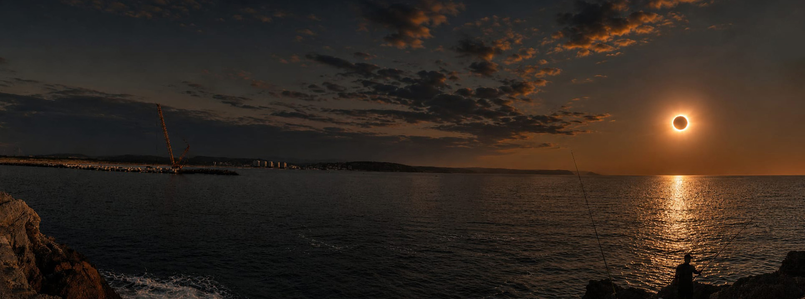

Acerca de esta aplicación
Características generales
Modelo 3D interactivo del Sistema Solar construido con Three.js (HTML + CSS + JavaScript). Incluye posiciones keplerianas aproximadas, tiempo real o acelerado, seguimiento de cámara, órbitas, lunas principales, paralaje estelar y nebulosas procedurales.
Estructura de archivos:
index.html— página principal y UIcss/style.css— estilos del panel y del modaljs/main.js— escena Three.js, órbitas, shaders y controlestextures/— mapas de planetas, anillos, Sol y memoria del eclipseefemerides.json— momentos de interés (eclipses, etc.)README.md— documentación y despliegue en GitHub Pages
Puedes alternar entre texturas procedurales (shaders) y
texturas de imagen de la carpeta textures/
con el interruptor del panel.
Autor
José Manuel Fernández Carreira
Eclipse total de Sol — 12 de agosto de 2026
Este programa se creó como recordatorio del eclipse total de Sol del día 12 de agosto de 2026, visible en la zona de Avilés (Asturias) y otras localidades del norte de España situadas en la franja de totalidad.
